1.뷰 개선사항
웹스퀘어5에서는 기존 하위 버전보다 시각적효과 및 편의성을 고려하여 더 많은 편집정보를 제공해드립니다.
1.1Design tooltip 기능
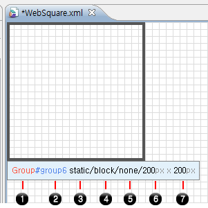
웹스퀘어에서 제공하는 모든 컴포넌트들이 디자인뷰에서 그려질때 해당 디자인툴팁기능이 활성화됩니다.
아래는 디자인툴팁이 제공하는 정보입니다.
1컴포넌트
2컴포넌트 아이디
3position 모드 (static/relative/absolute)
4블록요소(block Element) / 인라인요소(inline Element) 체크
5float 정보 (left/right/none)
6컴포넌트 넓이
7컴포넌트 높이
1.2position모드, margin 및 padding의 색상변화
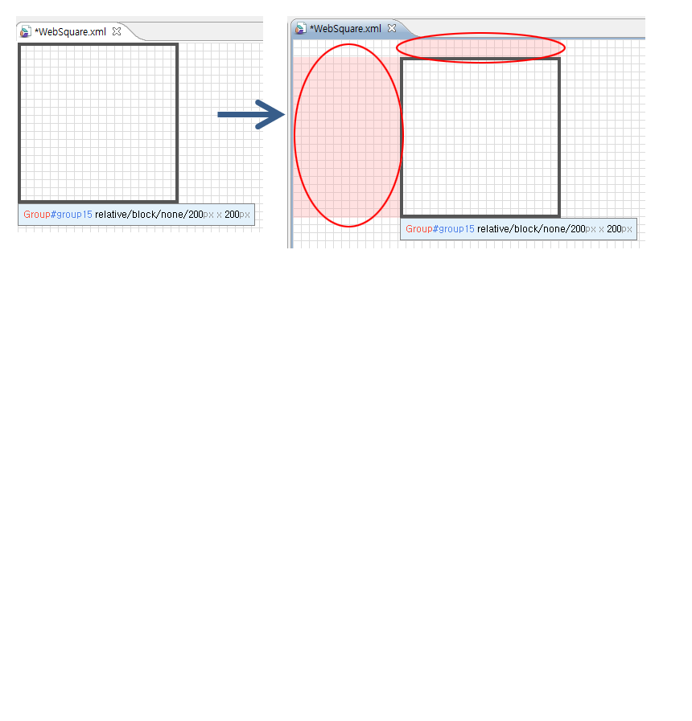
디자인뷰에서 position을 relative 혹은 absolute 로 설정하고 화면을 그리면 드래그앤드롭이 가능합니다, 위에 화면은 그룹을 그리고 마우스로 이동한 그림입니다.
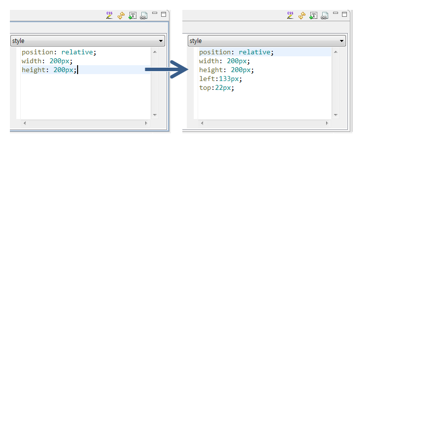
Position이 static일경우 키보드로 이동시에는 margin값을 증감시킵니다.,웹스퀘어5.0에서는 컴포넌트의 이동된 효과를 시각적으로 쉽게 표현하기위하여 구분될수 있는 반투명색상으로 그려집니다.
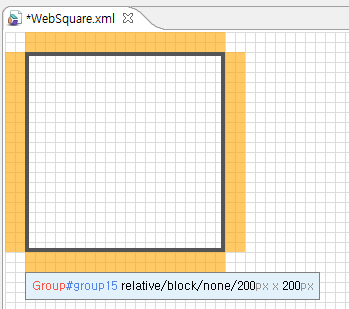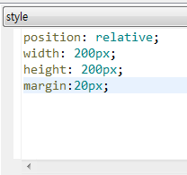
위에화면은 마진을 넣은 효과입니다.
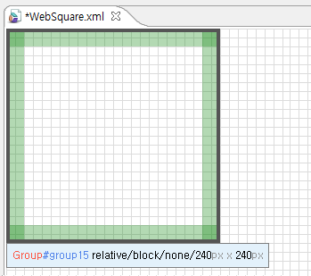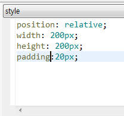
위에 화면은 패딩을 넣은 효과입니다.
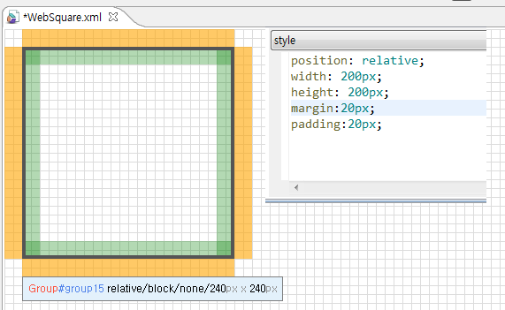
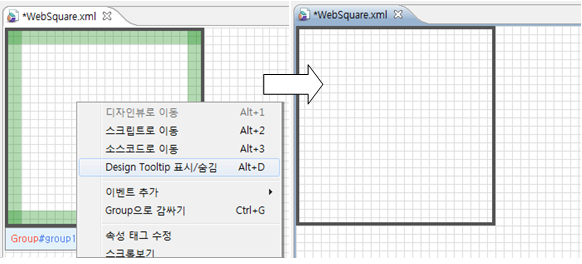
[그림 1-1]21
디자인툴팁 기능을 표시 및 숨김처리 가능합니다. 그룹을 선택하고 마우스 오른쪽을 클릭하시면 "Design Tooltip 표시/숨김" 이라는 표시가 보입니다.
1.3컴포넌트뷰 개선사항
1.3.1검색기능
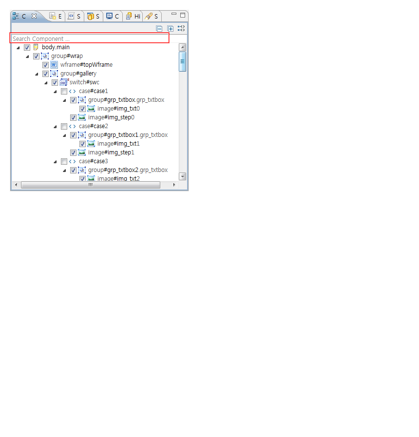
화면을 그릴때 수많은 컴포넌트 레이어 때문에 원하는 컴포넌트를 찾기 어려울수 있습니다. 웹스퀘어에서는 컴포넌트, 아이디명 및 css selector 로 찾고자 하는 컴포넌트를 쉽게 찾을수 있습니다.
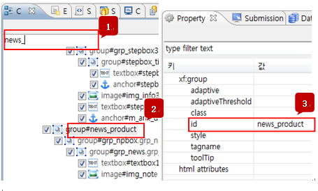
[그림 1-2]22
1.3.2컴포넌트명 옆으로 표시된 selector
웹스퀘어5.0에서는 컴포넌트뷰에서 해당컴포넌트태그의 뒤에 아이디 및 css selector를 기본으로 제공합니다.
사용자는 해당아이디에 어떤 클래스가 들어갔는지 쉽게 확인할 수 있습니다.
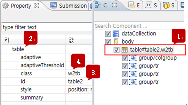
[그림 1-3]23
1컴포넌트뷰 > tableLayout(태그)는 table2(아이디)라는 이름을 가지며 w2tb(css selector)클래스를 적용하고 있습니다.
2tableLayout 컴포넌트
3아이디값 ( 아이디 선택자는 # 으로 시작합니다 )
4클래스값( 클래스 선택자는 . 으로 시작합니다 )
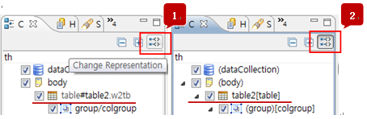
[그림 1-4]24
해당기능(selector 표시)을 원하지 않을경우 컴포넌트뷰의 오른쪽상단의 아이콘을 클릭하시면 웹스퀘어2.0방식으로 표현됩니다.
1.3.3새로운 Event 개발방식
기존 스튜디오에서 이벤트 추가 시 <script> 부분이 하위 노드로 추가되면서 소스가 복잡해지고 가독성이 떨어지는 부분을 고려해서 새롭게 이벤트 개발방식을 변경했습니다. 컴포넌트의 이벤트 추가 시 <Head>하위의 script 영역에 생성되면서 Script Tab을 이용하여 쉽게 찾고 한눈에 확인할수 있도록 변경되었습니다.
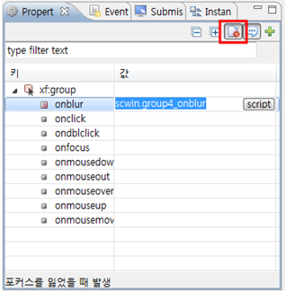
[그림 1-5]1
컴포넌트 Event 추가 시 디자인 탭에서 선택한 컴포넌트의 마우스 우클릭을 통한 이벤트 추가 및 Property View의 Event 보기를 통해 이벤트를 추가 합니다
Property View의 Event 보기 메뉴를 통해 화면 전환 후 해당 컴포넌트의 Event 목록 및 생성 된 Event를 확인 할 수 있습니다. 생성할 Event의 키 값을 더블 클릭 시 자동으로 값이 입력되며 script 버튼 클릭 시 해당 함수가 자동 생성 되며 해당 함수로 이동 됩니다.
2.0 방식의 Event 개발모드 지원
새로운 Event 추가 방식이 아닌 기존 Websquare 2.0 방식도 지원 함으로써 하위 호환성 및 기존 개발자의 편의성도 제공 합니다.
프로젝트별 설정을 통해 Event 개발 방식을 변경 할 수 있습니다.
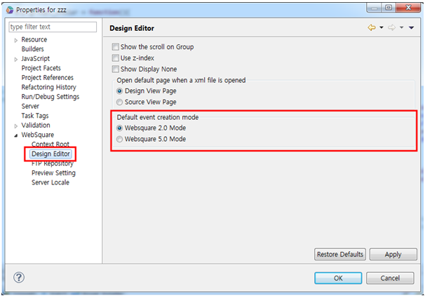
[그림 1-6]2
1.3.4Component View Head 영역 Navigation 기능
Component View에 Head의 자식 노드(instace, submission, datacollection, script, style)들을 체계적으로 보여줍니다.
Source 탭과 연동 되어 Component View의 트리를 선택 시 해당 소스로 이동 됩니다.
DataCollection 이동 메뉴를 추가 하여 빠르게 DataCollection를 선택 할 수 있습니다.
해당화면만 css 적용 시 style 탭을 더블 클릭해서 소스코드로 이동하여 쉽게 편집할수 있습니다.
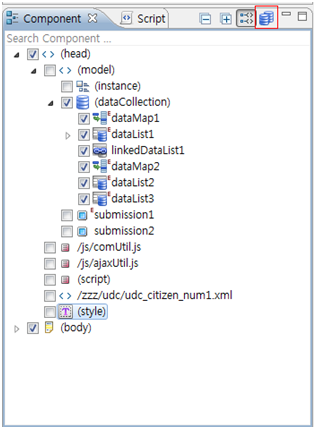
[그림 1-7]캡처
1.3.5Refresh 성능 개선
- Fast ReFresh
Design Tab에서 단축키 “F5” 로 제공합니다.
Design Tab에서 화면을 그릴때 컴포넌트 들의 조합이 틀어졌을 경우 가장 빠르게 갱신 할 수 있습니다. 단, WFrame, PageInherit, CSS 파일들의 외부 링크는 갱신하지 않습니다.
- Deep ReFresh
Design Tab에서 단축키 “Ctrl+F5” 또는 단축 메뉴의 “새로고침"으로 제공합니다.
Wframe, PageInherit, CSS 파일과 같이 외부 링크 파일들도 갱신작업을 수행합니다
- Style Refresh
Style View의 refresh icon으로 기능 제공을 합니다